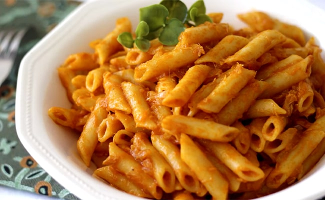

Macarrones

INGREDIENTES
- 250 g de macarrones
- 450 g de agua
- 300 g de tomate frito
- 20 g de aceite de oliva
- 1 cucharada de sal
- 1 cuchrada de pimentón dulce
- 1 pizca de ajo en polvo
- 1 cucharada de óregano
- 150 g de chorizo en taquitos
- Queso para pasta en polvo o mozzarella rallada
PASOS
- Ponemos todos los ingredientes en una olla a fuego medio-alto y removemos de vez en cuando hasta que los
macarrones estén listos. Esto ocurrirá unos 12-15 minutos después de haber encendido el fuego.
- Espolvoreamos los macarrones con queso para pasta o con mozzarella rallada. En este último caso, gratinamos un par de minutos en el horno.
- ¿No os parece que estos macarrones con chorizo son difíciles de superar? ¡Probadlos y nos contáis!
Volver a la página Principal